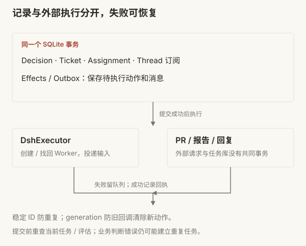

SYSTEMS / 01 · SUPER-AGENT
PR 合并以后，
谁接下一条反馈？
Super-agent 的任务分发与持续协作
假设你让 Agent 修复 CSV 导出的乱码。它提交 PR，评审通过，改动合并。两周后，同事在原话题里补充：“旧版 Excel 还是打不开。”

这时，需要继续的是同一件工作。系统得找到它的原始目标、旧讨论与代码，再根据现在的状态处理新反馈。如果每次都要人找回终端、复制消息、重新解释背景，会话管理就仍然是人的工作。
Super-agent 会把这次 CSV 修复记成一项任务，记录它来自哪个群聊、对应哪个 PR、目前处理到哪一步。PR 合并后，这条任务记录仍会保留。两周后同事在原话题里继续追问旧版 Excel 的问题，系统需要能找到之前的需求和修复记录，接着处理。
本文以这次假设的 CSV 修复为线索，结合 DeepSeek Harness（dsh）团队原文与公开原型 6337fc8。案例用来解释路径，不是一次真实修复的实测记录。公开版经过整理，与 dsh 内部实例及文章设计不完全一致；对应的实现范围会在相关机制旁说明。
五个观察点
要让系统接住这条反馈，dsh 的设计里有五个部分值得细看。每节先说 dsh 怎么做、公开原型做到哪里，再对照现有产品和框架的做法；现有方案的细节与来源见调研笔记。
| 观察点 | 在 CSV 例子里解决什么 | 公开原型 |
|---|---|---|
| Router | 新消息属于哪项任务：同话题追问、另一话题引用旧 PR，还是新任务 | 已实现：程序准入、订阅直通、Router 判断 |
| Session 数据库 | 两周后找回原任务和原会话；进程退出时不丢待办动作 | 已实现：任务存 SQLite，会话交给 Harness 存 JSONL |
| 异步 ReAct Loop | Worker 跑长命令时，同事的补充不必等它跑完 | 借 Harness 实现：后台命令与输入投递 |
| daemon | 云端的 Loop 在开发机上执行工具 | 未实现：只用本机子进程 |
| Watchdog | 发现 Worker 卡住、空转或偏离目标 | 只有部署文档里的每小时巡检配方 |


图中 [2]～[6] 是原文章节号。
01Router：新消息归哪项任务
需求是在群聊里提出的，而代码在 PR 里评审，需求后续的问题还是得回到群聊中讨论解决。
dsh 把职责分成两层。Router 维持跨任务的高层关联和对外交互；每个 Worker 在独立上下文中调查、实现与验证。Worker 可以再用子 Agent 完成复杂任务，但对上层仍表现为一个执行者。


CSV Worker 负责“这次 CSV 乱码修复”，不是所有带 CSV 字样的需求。先弄清这个边界，再看新消息会走哪里。
又来了一条 CSV 消息，会交给谁？
同一任务，追加输入
程序查到话题 A 的订阅，直接加入 Ticket-42 的输入，原 Worker 在后续步骤接收补充。
依据公开源码的三种输入示意，未实时运行模型。跨话题的旧任务关联需要明确指向；意图不清时仍可能判断错误。
同时查看三条消息的处理
| 新消息 | 路径与结果 |
|---|---|
| 原话题 A：“还要兼容旧版 Excel” | 程序查订阅，投递给 Ticket-42 的原 Worker。 |
| 话题 B：“PR #123 还要兼容旧版 Excel” | 明确引用帮助 Router attach 旧任务，建立新讨论订阅。 |
| 话题 B：“增加 CSV 导入功能” | 新任务；Router accept 新 Ticket 和 Worker。 |
同话题的补充由程序查订阅，直接加入原任务的输入队列。原型的 Intake.receive() 查 Thread.subscriptions，Executor 再通过 Harness 的 agent.steer() 把消息送进 Worker。正在运行的 Worker 在后续模型步骤接收补充，不需要先结束当前工作。
换一个话题时，“PR #123”这样的明确引用可以帮助 Router 找到原任务。它调用 orchestrator_route 选择 accept / attach / stop / ignore，宿主程序校验后执行。attach 建立新讨论与旧任务的关联，后续补充也能沿这条订阅找到执行者。
“增加 CSV 导入功能”是新任务，需要新建 Ticket 和 Worker。主题相似不足以复用旧任务。同一话题里也可能提出新任务：程序先按订阅送到原 Worker，Worker 发现超出本任务范围后用 handback 交回 Router。


订阅是多对多关系。一个任务可以关联群聊和 PR，一个讨论也可以被多个任务订阅。有人在原话题追问时，程序按订阅把消息直接送到 Worker，省去 Router 再次分派的开销。Router 仍会收到一条 follow_up 通知，说明消息已经送到哪些任务。它不再转发这条消息，但追问里可能有“先别做了”这样的要求，而停止任务由 Router 调用 stop 执行，所以它仍需要看到追问。读这条通知也要消耗推理成本。
消息先过准入，再判断归属
现实环境中，系统从群聊和 PR 收到的消息大多是闲聊、通知、背景资料等与任务无关的内容。dsh 的策略是先用程序规则过滤，再让模型判断剩下的消息。整体策略如下：
- 程序准入：检查消息来自哪个来源和群组、是否在监听范围内、发送者是否在允许名单里、是否明确 @ 了 Agent。不符合规则的直接拦下，不调用模型。公开版对应来源配置和策略准入。
- 语义判断：通过准入的消息成为候选，交给 Router。模型按提示词判断它是新任务、关联旧任务，还是普通讨论可以忽略。
程序过滤能减少模型调用；剩下的候选判断得准不准，还需要另外测试。


谁写实施提示词
Router 转交原始请求和简短路由背景，不临时编写修复方案。Worker 使用共同角色模板，结合原请求、团队交付规则、工作目录和仓库 AGENTS.md，自己定位代码并选择方案。
Router：新工作接单；明确指向旧任务才关联；主题相似不足以关联。转交原请求，不补实施计划。
Worker：读取原始请求与仓库规范；处理原范围的补充；其他请求交回 Router。
Router 平时只看任务记录来分发，不读代码；查源码、定位问题是 Worker 的事。例外是系统主动发现的候选，也就是没人明确提出请求、但可能符合接单规则的消息。这时 Router 可以用限定范围的只读工具查看相关讨论和仓库，判断它是否在接单规则覆盖的范围内。公开版的 Router 仍然有 Bash 等工具，“不读代码、不亲自实现”主要靠提示词约束，工具层面并没有禁止。
重复任务与提前行动
两个人在不同讨论里描述同一个缺陷，产生两条 Trigger。Router 都当成新任务，就会有两个 Worker、两个 PR。消息 ID 去重只防重复投递，识别不了这种语义重复。公开版 claimPull() 只保证同一 PR 至多属于一个活跃 Ticket，不检查两个 PR 是否在修同一个问题。
dsh 内部实例还会在群聊讨论缺陷时，提前尝试复现并提交修复 PR，有价值再交付，没价值就放弃。公开原型可先在 observe 模式只记录本来会接的候选，再在 auto 模式按策略实际执行。原文只给了成功案例，没有给出全部尝试的数量。
现有方案怎么归属消息
| 方案 | 怎么判断新消息属于哪个任务 |
|---|---|
| Devin（Slack） | @Devin 发起会话，之后在同一 thread 里来回对话；mute 让它停止读取这个 thread |
| Cursor（Slack、GitHub） | thread 里已有 agent 时，再 @Cursor 算追加指令；@Cursor agent 强制新建 |
| Codex（Slack、GitHub） | 同一 thread、同一账号的后续请求延续原任务；PR 里 @codex 以这个 PR 为上下文 |
| GitHub Copilot cloud agent | PR 评论 @copilot 继续迭代，保留同一 PR 上之前会话的上下文 |
这些产品都按“同一 thread 或同一 PR 就是同一任务”归属消息。在它们的公开文档里，没有找到跨 thread、跨渠道的多对多订阅，也没有找到由模型判断“另一个话题提到的 PR #123 是不是旧任务”的做法。
02Session 数据库：任务和会话存在哪里
两周后要接着修，系统得找回两样东西：这项任务的记录，和 Worker 当时的会话。公开原型把它们分开存：任务状态写进状态目录下的 SQLite 文件 orchestrator.sqlite，会话历史交给 DeepSeek Harness。
任务记录：四类记录
为了让“旧版 Excel 还是打不开”这条消息能定位到之前已有的同一项修复，系统需要用到四类不同的记录：
| 记录 | 在这次修复中是什么 |
|---|---|
| Trigger | 这条反馈的消息 ID、发送者、时间、原文和引用 |
| Thread | 原群聊话题或 PR 下的一段连续讨论，以及订阅它的任务 |
| Ticket | “修复 CSV 乱码”的目标、原请求、授权、输入与交付状态 |
| Assignment | 这项任务的一轮执行，包括启动、投递和报告 |

探索完整架构
拖动画布平移，使用底部按钮缩放；点击节点查看相邻关系。
交互图将在阅读到此处时自动加载。查看完整静态图
新任务会新建 Ticket 和 Worker。旧任务重新开始时，比如修复已经结束又有人追问，系统不新建 Ticket，只在原 Ticket 下新开一轮执行，即新的 Assignment。Worker 会话的 ID 由 Ticket ID 固定生成（worker-<ticketId>），所以接手的还是原来的 Worker。Ticket 记录这是哪项工作，Assignment 记录其中一轮执行。上一轮结束了，Ticket 还在，同一项工作就能接着做。
会话历史：Harness 的 JSONL 日志
Router 和 Worker 的对话不在 SQLite 里。Harness 给每个会话写一份只追加的事件日志，文件名 session.v3.jsonl.zstd，默认用 zstd 压缩；同一时间只允许一个进程写入（flock）。上下文压缩只把旧条目从模型当前看到的视图里隐藏，原文不删。进程中断后恢复，Harness 会给没跑完的回合补写错误结果和结束标记。原型读取 Worker 记录时，按固定 ID worker-<ticketId> 找到对应会话。
主会话不必一直装着全部历史
dsh 把有限的模型窗口看作缓存。近期很可能用到的摘要和引用直接放进窗口，即 Inline；完整、低频或太长的内容留在窗口外，按需读取，即 Spill。
当前反馈可以带原任务摘要和读取入口，Router 再沿引用展开：
反馈 → 所在讨论 → 相关任务 → 最近报告 / 另一个已绑定 PR


原文称它为链式召回：每次读到的对象带下一跳摘要与 ID。公开原型的候选卡片提供相关 Ticket 的标题、状态、最近报告预览和读取入口，完整任务、事件及订阅保存在 SQLite，执行记录由 Harness 保存。
Router preset 使用 Harness 的会话压缩与工具结果裁剪；提示词要求压缩后重新查看任务摘要。模型窗口的压缩不会删除数据库订阅，因此模型忘记了旧细节，已绑定讨论仍能按关系投递。
没有编号或引用的“几个月前那个导出问题”，仍要靠查找和判断，公开材料没有这方面的实验。
两周后怎么重新开始
原任务结束后，讨论订阅保留。人类在原话题或已合并 PR 下补充问题时，程序检查原授权有效、任务没有被人明确停止，然后新建执行记录，恢复原会话和目录。
恢复通知要求 Worker 检查当前工作目录、Git 历史和 PR 状态，只续办原范围的补充，超出范围交回 Router，避免重复已完成的动作。历史提供背景，现在的代码决定怎么继续。
会话还在时，只追加恢复通知和新输入；会话不存在时，才重新建立并提供原请求。输入按消息 ID 去重。被人明确停止的 Ticket 不会被普通后续消息自动恢复，机器人和 CI 也不会唤醒已结束的任务。
进程退出时，待办动作不能丢
再看一个假设的故障窗口：Router 决定接单，在群里回复了一句“收到，我来处理”，但 Worker 还没启动，进程就退出了。重启后，这句回复只留在聊天记录里，程序无从知道还有一个 Worker 等着启动。所以接单时，系统要把任务和“启动 Worker”这个待执行动作一起存下来，重启后才能接着做。
dsh 公开原型用三样东西解决这个问题：
- 状态目录锁：同一份状态只允许一个进程打开，避免两个进程同时写。
- SQLite 事务：接单时，Decision、Ticket、Assignment、订阅、“启动 Worker”动作和群里的确认消息，在同一个事务里一起写入；任何一步失败就全部回滚，不会出现回复了“收到”却没有任务的情况。
- 持久 Effects 队列：启动 Worker、发送消息这类对外动作，事务里只先记成队列项，提交后才真正执行。进程中途退出，重启后从队列里接着执行。

这套办法管的是“本地还没写完就退出”。如果消息已经发到飞书或 GitHub，本地还没记下“已发送”就退出，重启后队列里这条动作仍是未完成，直接重试会再发一遍。SQLite 的事务管不到外部系统，只能靠固定消息 ID、回查会话历史或渠道来避免重复；Worker 的 Git 和 PR 操作也要在恢复时先核对实际状态。它也只管单个进程，不是多个 Router 副本之间的一致性协议。
现有方案存在哪里
| 方案 | 存在哪里 | 怎么恢复 |
|---|---|---|
| Claude Code | 本机 ~/.claude/projects/<project>/<session>.jsonl，默认保留 30 天 | --resume、--fork-session；Agent SDK 的 SessionStore 可镜像到共享存储，跨机器恢复 |
| Codex CLI | 本机 ~/.codex/sessions/YYYY/MM/DD/rollout-*.jsonl | codex resume；以最近一条压缩记录为检查点重建 |
| OpenAI Conversations | OpenAI 服务端，持久保存消息与工具调用 | 按 ID 续接 |
| OpenHands SDK | 每个事件一个 JSON 文件（events/event-*.json） | 从持久化状态恢复会话 |
| Temporal、DBOS | 工作流事件历史，或 Postgres 中的步骤检查点；Workflow ID 唯一 | 重放时跳过已完成步骤；外部动作要求幂等 |
dsh 的会话日志和 Claude Code、Codex 同类，都是本机追加写 JSONL；现有方案多出来的是跨机器恢复和 fork。任务状态一侧，Temporal、DBOS 把“记下步骤结果、重放时跳过”做成了通用运行时，dsh 的 Effects 队列只管本地事务提交后的重试。
03异步 ReAct Loop：跑长命令时还能接收补充
经典 ReAct Loop 等待工具完成再继续。dsh 改为先收到 Started 通知，工具后台运行，最终结果再作为事件进入会话；新输入在当前模型步骤结束后处理。


公开原型借助 Harness 实现这一点：长命令放到后台运行，新消息通过输入投递送进会话。Router 会话的前台命令和等待任务结果最多阻塞 5 秒，超时就先返回，不会一直占着会话。所以用户不必等长命令跑完才补充要求；但模型正在生成的这一步不会被打断，新消息要等这一步结束后才被读到。
输出按渠道分工：IM 里只发简短结论和需要人决定的事；背景、改动内容和验证结果写在 PR 与文档里。原型限制每条 IM 回复最多 100 词，普通进度不发到群里，只有需要人处理的事才立即通知。人工时间是否因此减少，原文的实验没有测量。
| 方案 | 后台执行 | 运行中来了新消息 |
|---|---|---|
| Claude Code | run_in_background 立即返回任务 ID；Ctrl+B 把运行中的命令转到后台 | 消息排队，当前工具调用结束后注入；Esc 中断 |
| Codex | exec_command 默认 10 秒后让出，之后轮询或写入 | turn/steer 插入进行中的回合，也可排队成下一条 |
| OpenAI Responses API | background: true 异步运行，轮询状态 | response.steer 中途追加指令（仅 GPT-6 系列经 WebSocket） |
| LangSmith Deployment | interrupt() 暂停，状态存入 checkpointer | 四种策略：enqueue、reject、interrupt、rollback；开源 LangGraph 没有 |
公开原型对运行中的新消息只有一种处理：送进当前会话，等下一步读入。现有方案把它做成了可选策略：排队、拒绝、中断或回滚。
04daemon：Loop 在云端，工具在开发机
dsh 先把计算与持久状态分开，再把计算与执行环境分开：云端 Loop 访问独立数据库，通过轻量 daemon 在开发机或云端环境执行工具并取回结果。开发机上的未提交修改、内网依赖和工具链留在原地。


公开原型只用本机 SQLite、目录锁和本地子进程，没有实现图中的云端无状态容器与端侧 daemon。原文把安全、上下文边界与跨实例协作列为开放问题。
| 方案 | Loop 在哪 | 工具在哪执行 |
|---|---|---|
| Cursor My Machines | Cursor 云端 | 用户机器；worker 向 Cursor 建立出站长连接，不开入站端口 |
| OpenHands | 后端 AgentController | 沙箱里的 action_execution_server，后端经 REST 下发动作；LocalRuntime 可在本机运行 |
| Claude Code self-hosted | 整个进程在用户主机 | 同一台主机；推理调用模型 API |
| GitHub Copilot cloud agent | GitHub | 云沙箱、GitHub Actions，或注册的自有机器 |
Cursor My Machines 和 OpenHands 已经是图 11 这种“Loop 在云端、工具在端侧”的形态。dsh 公开原型这一层还没有实现。
05Watchdog：卡住、空转与跑偏
原文把 Watchdog 放在主系统之外，用定时消息驱动独立 Session，既处理接口与恢复故障，也判断 Worker 是否陷入无效循环或偏离目标。
公开部署文档有独立 profile 的每小时巡检配方：查状态，根据结果保持安静、报告故障或重启，并尊重人为停止标记。公开原型没有无效循环或跑偏检测的实现，也没有这方面的效果数据。
| 方案 | 检查什么 | 发现后 |
|---|---|---|
| OpenHands StuckDetector | 五种重复模式，如同一动作得到同一结果 4 次、同一动作连续报错 3 次 | 先提醒模型一次，仍卡住就停止 |
| SWE-agent | 成本、调用次数、单条命令与总执行时间 | 超限退出；超成本时先提交再退出 |
| Temporal、Kubernetes | Activity 心跳与超时；liveness 探针 | 该次尝试失败并重试；重启容器 |
| LangGraph、Agents SDK、Claude Code | 步数上限、max_turns、guardrails、Stop hook | 抛异常或阻止结束；检查逻辑由用户自己写 |
卡住和空转已有机械化的判据，比如 OpenHands 的重复模式和 Temporal 的心跳。“偏离目标”在公开资料里没有找到现成实现，只有 guardrails、hook 这类由用户自己写的检查。
06看改善，也看代价
dsh 先比较端到端调度，再测 Router 批处理。补充微实验则来自本次研究，三者的任务和指标不同。

原文调度实验：慢端改善，缓存读取增加
原文第 7.1 节比较四种方案，每种运行 5 次。约 300 条消息中有约 20 条工作请求，编码被替换成只消耗时间的工具；消息间隔与工作时长缩为四分之一，模型耗时保持真实。测的是调度与协作，未测真实代码质量。

| 方案 | p50 完成耗时 | p95 完成耗时 | 每次实验缓存读取 |
|---|---|---|---|
| 单会话，中性提示 | 20.4 分钟 | 29.5 分钟 | 605 万 token |
| 单会话，优先委派 | 13.8 分钟 | 29.0 分钟 | 1,082 万 token |
| Super-agent | 12.4 分钟 | 15.7 分钟 | 2,323 万 token |
| Super-agent，去掉直通 | 12.6 分钟 | 15.5 分钟 | 3,177 万 token |
p50 是完成耗时中位数；p95 用来观察慢端。中性组 5 次都没有调用 Subagent，优先委派组 4 次委派、1 次自己执行，因此后者是更接近的对照。相较它，p50 改善约 10%，p95 改善约 46%，缓存读取为 2.15 倍。
去掉直通后，p50/p95 都只变化约 0.2 分钟且方向不同，缓存读取增加约 37%。这组负载支持直通节省协调开销，没有显示明显速度优势。
缓存读取包含所有 Session，但不是完整账单。只有 5 次运行，委派策略、过滤和架构也同时不同，不能将改善全归因于双层或当成稳定生产收益。完整价格、代码质量和人工时间仍需测量。
原文批处理实验：积压可以摊薄开销
原文第 7.2 节把需判断的 Trigger 从约 1 条/分钟提高到约 40 条/分钟。平均 batch 由 1 增至 2.8，单次请求从 2.5 秒增至 3.9 秒，单个决定分摊推理时间由 6.4 秒降至 1.6 秒。

批量增长快于请求耗时，支持积压合并可以摊薄开销。但图中的分摊值不能直接由前两个端点相除得到，完整定义与聚合口径未充分公开，不能据此外推稳定容量。
补充微实验：每条更省，整批等得更久
本次研究另做 110 次 CLI 调用，观察固定批次的合成消息分类，并未复现 dsh 的常驻 Router。较复杂模板组的整轮墙钟耗时中位数：
| 模型 | 每批 1 条 | 每批 128 条 | 大批次每条分摊 |
|---|---|---|---|
| DeepSeek-V4-Flash | 5.62 秒 | 65.17 秒 | 0.51 秒 |
| Seed-2.1-Turbo | 4.47 秒 | 75.36 秒 | 0.59 秒 |
每条消息平均用的时间少了，但要等到整批结果，还是得一分钟以上。这里的耗时也包括 CLI 和 Harness 运行所花的时间。
这次用的消息模板不多。每批 128 条的测试，每个模型只跑了两次，原始返回结果也没有保存下来，没法再逐条核对。所以，这组数据可以用来看批量处理后的耗时变化，实际用起来能不能把消息分对，还得另外测试。具体数据和测试记录见实验附录。
07先让一件事能够续办
对研发团队，适合先选 CI 修复或评审跟进等边界清楚的范围：把请求、Worker、PR 和验收关联，自动续办已知任务，需要人决定时提供问题、进展与证据。
Super-agent 值得学习的，是把任务的持续身份与讨论关联写进系统。几周后再回到这件工作，系统应能说明做到哪里、依据什么、还需要人决定什么。长期模糊召回、重复任务协调和真实交付收益，仍需要继续验证。
来源与延伸阅读
- DeepSeek Harness 团队原文：dsh 的整体设计、内部实例与两组初步实验。
- 公开原型固定版本：
prompts/dispatch.md、prompts/work.md、src/core/intake.ts、src/executor/dsh.ts、src/app/resources.ts、src/app/store.ts、src/app/effects.ts。 - 原型架构文档与部署文档：工具、状态、恢复与巡检。
- 五个观察点的现有方案调研：Router、daemon、Watchdog、Session 存储与异步 Loop 的对照与来源。
- 实验附录与原图索引、架构图工具比较、botmux 配套文章。
架构图按 dsh 原文重绘，图号沿用原文；实验图保留原图。源码解读与路由示意依据公开原型，不代表实时运行结果。
评论
评论由 GitHub Discussions 提供。